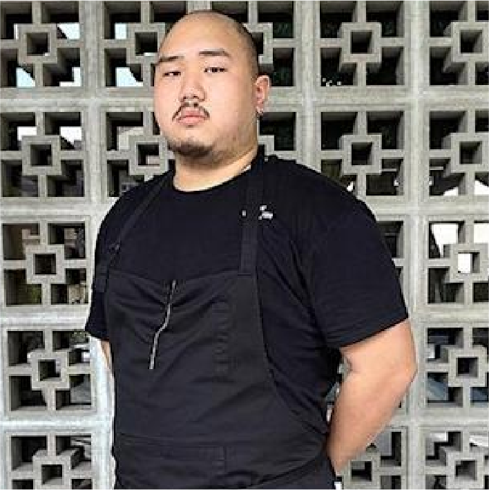

Chef's Story
Chef owner Aaron Phua studied hospitality management and worked part-time in hotels, banquet halls and cafés. He recalls, “I found my love for coffee in 2013 and interned at Departure Lounge. Together with my family, we opened Thirty Seconds Café in 2014 and I have participated in various barista competitions domestically and internationally.”
That last bit is another typical understatement from Phua. After several years of competing, he was crowned the Malaysia Barista Champion in 2019 and represented our country in the World Barista Championship 2019 in Boston.